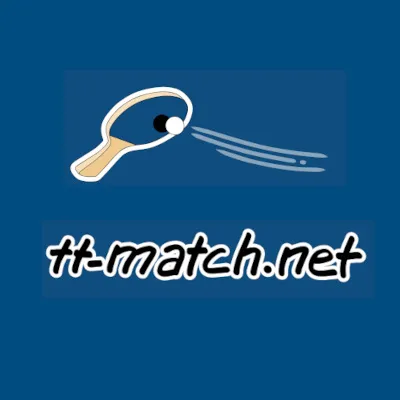
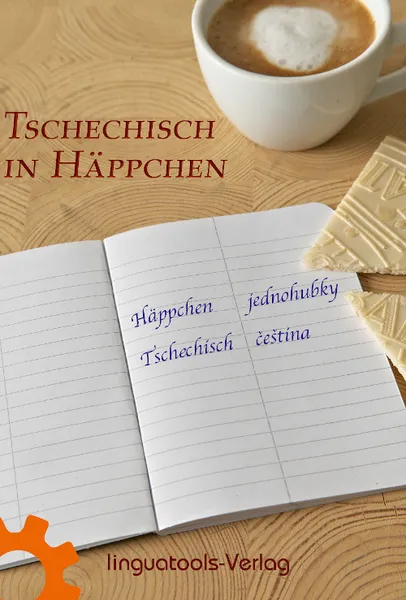
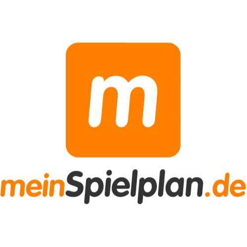

Tischtennis-Turniersoftware (online) | TT-Match PRO
Produktprofil · Marktplatz-Daten 2026-10-13 · Verkaufsseiten-Recherche 2026-10-13 · Kategorien: Software, Sport
- Tischtennis-Turniersoftware (online) | TT-Match PRO ist ein/e Software in Software und Sport, vertrieben über den Digistore24-Marktplatz von Anbieter linguatools, gelistet seit 2026-04-20.
- Listenpreis $93.01; Digistore24 meldet — Checkout-Konversion, — Stornierungsquote und 50 % Affiliate-Provision.
- Verdienst pro Verkauf (Affiliate): $46.51 (Anbieter-seitige Statistik, keine Prognose).
Interesse an Tischtennis-Turniersoftware (online) | TT-Match PRO? Aktueller Preis, Boni und Garantiebedingungen finden Sie auf der offiziellen Seite des Anbieters:
Offizielle Verkaufsseite ansehen
Affiliate-Link (Werbung) — wir verdienen ggf. eine Provision, ohne Mehrkosten für Sie.

Marktplatz-Daten
| Produkttyp | Software |
|---|---|
| Preis | $93.01 (Single payment) |
| Affiliate-Provision | 50 % |
| Garantie/Rückgabe | Laut Verkaufsseite des Anbieters — vor dem Kauf auf der offiziellen Seite prüfen |
| Anbieter | linguatools (gelistet seit 2026-04-20) |
| Marktplatz-Statistiken* | Checkout-Konversion — · Stornoquote — · Verdienst/Verkauf $46.51 |
* Anbieter-seitige Statistiken von Digistore24; sie hängen von der Traffic-Qualität ab und sind keine Prognose.
Marktplatz-Beschreibung des Anbieters
<pre style="text-align:center;"><br /><strong>Empfehle die Tischtennis-Turniersoftware</strong></pre> <pre style="text-align:center;"><strong><br />TT-Match PRO<br /><br /></strong><span style="background-color:#ffff99;">Für jeden verkauften Zugang erhältst du<br /> eine Provision in Höhe von 50%</span></pre> <p style="text-align:left;"><br /><br />Empfehlen kannst du die Software z.B. an:<br /><br />- Deine Community, wie<br /> Follower, Newsletter-Abonnenten<br />- Verbände<br />- Vereine<br />- Trainingszentren<br />- Turnierleiter<br />- Tischtennis-Camps<br />- Trainer<br />- Sport-Zentren<br /><br />---------------------<br /><br /></p> <p>Beim Kauf von TT-Match PRO erhält der Kunde:<br /><br /></p> <p>✓ 24/7-Online-Zugang zu tt-match.net für 1 Jahr<br />✓ Unbegrenzte Turnieranzahl<br />✓ Diverse gefragte Turnierformate<br />✓ Mitglieder-Verwaltung<br />✓ Updates inklusive<br />✓ Priorisierter Support<br /><br /></p> <p>Turnierformate:</p> <ul> <li>Gruppensystem + KO/Doppel-KO</li> <li>KO/Doppel-KO</li> <li>Schweizer System<br /><br /></li> </ul> <p>Spieleranzahl:</p> <ul> <li>KO: bis 32 Spieler</li> <li>Doppel-KO: bis 16 Spieler</li> <li>Gruppensystem bis zu 64 Spieler</li> <li>Schweizer System: bis zu 64 Spieler<br /><br /></li> </ul> <p>Der Kunde zahlt nur einmal - kein Abo<br />Der Kunde kann TT-Match PRO optional um 1 Jahr für 49 € verlängern.<br /><br /></p> <h1> </h1> <p> </p> <h1> </h1> <p> </p>
Von der Verkaufsseite des Anbieters
Seitentitel: TT-Match
Hauptüberschrift
TT-Match PRO - Jahreslizenz Vollversion der Turniersoftware
Abschnitts-Überschriften
- Die wichtigsten Features auf einen Blick – und das Beste: Alle Features sind mit der Jahreslizenz inklusive.
- Live-Ergebnisdienst
- TT-Match PRO
- Für wen ist TT-Match PRO ideal?
- FAQ
- Bereit für TT-Match PRO?
Einstiegstext
Sichere dir TT-Match PRO und nutze unsere Online-Turnier-Software flexibel für deine Turniere – ohne Abo, keine automatische Verlängerung.
Keine Installation. Mit einem Klick starten. Spieler reinpasten, automatisch auslosen lassen. Ergebnisse sofort erfassen.
Schweizer System, KO, Doppel-KO Gruppenphase mit KO-Haupt- und Trostrunde. Alle Turnierformen sind mit der Jahreslizenz nutzbar.
Satz für Satz können alle Spielergebnisse live verfolgt werden. Perfekt für Turnierleiter, Spieler und Zuschauer.
Fragen, die die Verkaufsseite beantwortet
- Wie erfolgt die Auslieferung von TT-Match PRO nach der Bestellung?
- Was bedeutet 'uneingeschränkte Nutzung' genau?
- Wird die Lizenz für TT-Match PRO nach einem Jahr automatisch verlängert?
- Kann ich die Jahreslizenz günstiger verlängern?
- Wie viele Zugänge bekomme ich mit TT-Match PRO?
- Kann ich die TT-Match-Software vor dem Kauf testen?
Recherche-Methode: rohes HTML · 667 Wörter · Qualität: rich · recherchiert am 2026-10-13. Vollständige Recherche-Datei (MD) ↗
Wie Produkte dieser Art geliefert werden
Allgemeiner Hinweis zu diesem Produkttyp (keine anbieterspezifische Anleitung): Software wird digital geliefert — entweder als direkter Download oder per Lizenzschlüssel/Mitgliederbereich nach dem Checkout. Für die genaue Anwendung von Tischtennis-Turniersoftware (online) | TT-Match PRO sind die offizielle Verkaufsseite und die enthaltenen Materialien maßgeblich.
Gut zu wissen
- Keine Garantie-Formulierung in unserer Recherche gefunden — bestätigen Sie das Rückgabefenster auf der offiziellen Seite, bevor Sie kaufen.
- Marktplatz-Zahlen (Preis, Provision, Konversion, Stornoquote) — Quelle: offizielle Digistore24-Marktplatz-API (Affiliate-Sicht), Stand 2026-10-13. Gegenprüfung: Marktplatz-Suche nach Produkt-ID 686195.
- Verkaufsseiten-Zitate — Quelle: https://tt-match.net/de/sites/dg24_turnier-software, abgerufen 2026-10-13 (Methode: rohes HTML). Verify: offizielle Seite öffnen.
- Garantie / Rückgabe — vom Anbieter festgelegt; vor dem Kauf auf der Verkaufsseite bestätigen.
- Nicht von uns geprüft: Produktqualität, Ergebnisse, Testimonials — kein Praxistest für dieses Listing durchgeführt.
Häufige Fragen zu Tischtennis-Turniersoftware (online) | TT-Match PRO
Antworten aus dem Marktplatz-Snapshot (2026-10-13) und der Verkaufsseiten-Recherche (2026-10-13); Anbieteraussagen sind inline gekennzeichnet.
Was ist Tischtennis-Turniersoftware (online) | TT-Match PRO?
Tischtennis-Turniersoftware (online) | TT-Match PRO ist ein Angebot des Typs „Software" im Digistore24-Marktplatz, Anbieter: linguatools, gelistet seit 2026-04-20. Eingepflegt unter Software und Sport. Digistore24 wickelt Checkout, Lieferung und Rückgaben ab.
Wie viel kostet Tischtennis-Turniersoftware (online) | TT-Match PRO?
Der Digistore24-Marktplatz listet es für $93.01 (single payment). Preise legt der Anbieter fest und können sich ändern — der Marktplatz-Eintrag oben zeigt den Schnappschuss; die offizielle Verkaufsseite zeigt den aktuellen Preis.
Gibt es eine Geld-zurück-Garantie für Tischtennis-Turniersoftware (online) | TT-Match PRO?
Unsere Verkaufsseiten-Recherche hat keine explizite Garantie-Formulierung gefunden. Viele Digistore24-Produkte bieten 60 Tage Geld-zurück, aber das legt jeder Anbieter selbst fest — bestätigen Sie es auf der offiziellen Verkaufsseite, bevor Sie kaufen.
Ist Tischtennis-Turniersoftware (online) | TT-Match PRO seriös?
Wir bewerten keine Seriosität — wir veröffentlichen überprüfbare Zahlen: Anbieter linguatools (gelistet seit 2026-04-20), Checkout-Konversion —, Stornoquote —, Affiliate-Verdienst/Verkauf $46.51 (alles Anbieter-seitige Marktplatz-Statistiken). Lesen Sie unsere 6-Punkte-Bewertungsmethode und entscheiden Sie anhand der Zahlen — oder diskutieren Sie Tischtennis-Turniersoftware (online) | TT-Match PRO auf GitHub.
Wo kann ich Tischtennis-Turniersoftware (online) | TT-Match PRO sicher kaufen?
Nur über die offizielle Verkaufsseite, die auf dieser Seite verlinkt ist (Checkout und Rückgaben laufen über Digistore24). Prüfen Sie dort Preis und Garantie vor der Bestellung. Der Link ist ein Affiliate-Link — der Kauf unterstützt diese Website ohne Mehrkosten für Sie.
Wie erhalte ich Tischtennis-Turniersoftware (online) | TT-Match PRO nach der Zahlung?
Der Checkout läuft über Digistore24: Nach der Zahlung erhalten Sie Ihren Zugang oder Download per E-Mail und in Ihrem Digistore24-Kundenkonto. Lieferdetails für diesen Produkttyp: Software wird digital geliefert — entweder als direkter Download oder per Lizenzschlüssel/Mitgliederbereich nach dem Checkout. Bei Problemen kann der Digistore24-Käufersupport Ihre Bestellung wiederherstellen.
Alle 50 Käuferfragen zu Software — das komplette Kategorie-FAQ.
Tischtennis-Turniersoftware (online) | TT-Match PRO auf Reddit diskutieren
In Community-Threads vergleichen echte Käufer Erfahrungen. Wir verlinken Communities, keine einzelnen Posts — Threads verschwinden, Subreddits bleiben:
- r/de_EDV — deutschsprachige Community mit Diskussionen zu software.
- Reddit-Suche nach „Tischtennis-Turniersoftware (online) | TT-Match PRO" — Live-Ergebnisse, von uns nicht beeinflusst.
- Top-„Erfahrungs"-Treffer dieses Jahr — selbst nach Aktualität filtern.
Passendes auf Amazon.de
Physische Produkte und Zubehör, die häufig zusammen mit Tischtennis-Turniersoftware (online) | TT-Match PRO gekauft werden:
- Software auf Amazon.de — Top-Ergebnisse, Amazon-Ranking.
- Bestseller: Software — live Liste von Amazon, von uns nicht kuratiert.
Werbung: Als Amazon-Partner verdient DigistorePicks DE an qualifizierten Käufen (Partner-tag adminstorede-21). Amazon setzt eigene Preise und Provisionen (niedrige einstellige Prozente — weit unter den 30–75% der Digistore24-Anbieter). Amazon ist ein Convenience-Angebot für Sachprodukte, kein Ersatz für das digitale Produkt oben.
Ähnliche Angebote in Software

<h3>Maya: digitale Assistentin für WhatsApp und Telefon</h3> <p>Maya beantwortet Kundenanfragen kleiner Betriebe rund um die Uhr auf WhatsApp

<div> <div>Zencaptcha schützt Webseiten vor Spam und betrügerischen Aktivitäten. Falsche und temporäre E-Mail-Adressen werden erkannt und Bots werde

<p>+++ Willkommen beim Meisterbot-Partnerprogramm! +++</p> <p>Verdienen Sie über 850 EUR Provision pro Sale mit der ersten schlüsselfertigen K

<p><strong>Verdienen Sie 40 % Provision!</strong><br />Werden Sie Affiliate und profitieren Sie von unserem <strong>attraktiven 40
Weitere Angebote von linguatools

<p>Warum wird aus dem deutschen „Glück“ im tschechischen „klika“? Mit welcher Eselsbrücke merkt man sich das tschechische Wort für „schlittschuhlaufen“? W
Tischtennis-Turniersoftware (online) | TT-Match PRO ist auch gelistet in
Sport (78 Produkte)
Ähnliche Preislage in Software

<p style="margin:0;"><span style="font-size:150%;"><strong><span style="letter-spacing:0.5px;padding:5px 6px;backg

<p>Freischaltcode zur 14-tägigen Testversion</p>

<p><strong>LingChat ist eine KI-gestützte Sprachlern-App, die Nutzern hilft, mehr als 60 Sprachen mit KI- und echten Gesprächspartnern zu üben. Sie

<p>Bewirb ein leicht verständliches KI-Produkt mit breiter Zielgruppe und starkem Nutzen: Mit Book2Profit erstellen Nutzer in wenigen Schritten fertige di
Ähnliche Suchanfragen
Wo Sie es sich ansehen können
Wo Sie es sich ansehen können
Aktuelle Preise, Garantie und Boni finden Sie auf der offiziellen Verkaufsseite:
Offizielle Verkaufsseite ansehen
Das ist ein Affiliate-Link (Werbung) — kaufen Sie darüber, verdienen wir ggf. eine Provision, ohne Mehrkosten für Sie.
Quellen & weiterführende Informationen
- Offizielle Verkaufsseite (aktueller Preis, Garantie, Boni): tt-match.net/de/sites/dg24_turnier-software (Affiliate-Link)
- Öffentliche Digistore24-Produktseite: digistore24.com/product/686195
- Vollständige Recherche-Datei (Markdown, versioniert): content/products/56360-tischtennis-turniersoftware-online-tt-match-pro.md
- Affiliate-Supportseite des Anbieters: tt-match.net/de/sites/dg24-partner-support?aff=[AFFILIATE]
- Marktplatz-Kategorie: Software
Wie wir Produkte wie Tischtennis-Turniersoftware (online) | TT-Match PRO bewerten
Sechs Prüfungen, ausschließlich mit offiziellen Marktplatz-Zahlen. Die vollständige Bewertungsmethode lesen · unsere Recherche-Standards & Kennzeichnung.
Fragen oder eigene Erfahrungen mit Tischtennis-Turniersoftware (online) | TT-Match PRO?
Praxis-Tests veröffentlichen wir erst, nachdem wir ein Produkt selbst gekauft haben — aber Ihre Erfahrung hilft anderen Lesern: Diskussion zu Tischtennis-Turniersoftware (online) | TT-Match PRO auf GitHub starten/verfolgen. Falsche Zahl gefunden? Korrektur melden — jede Seite zeigt ihre Datenstände, Korrekturen gelten für die ganze Website.